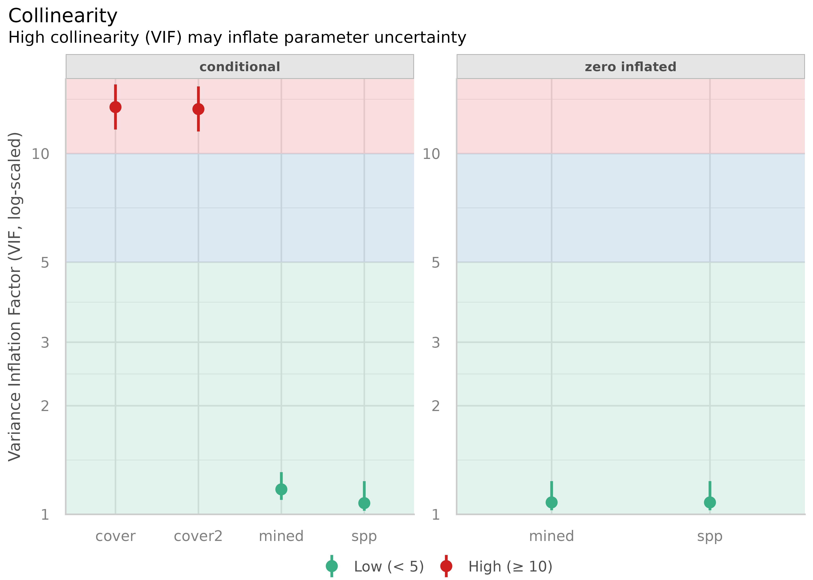
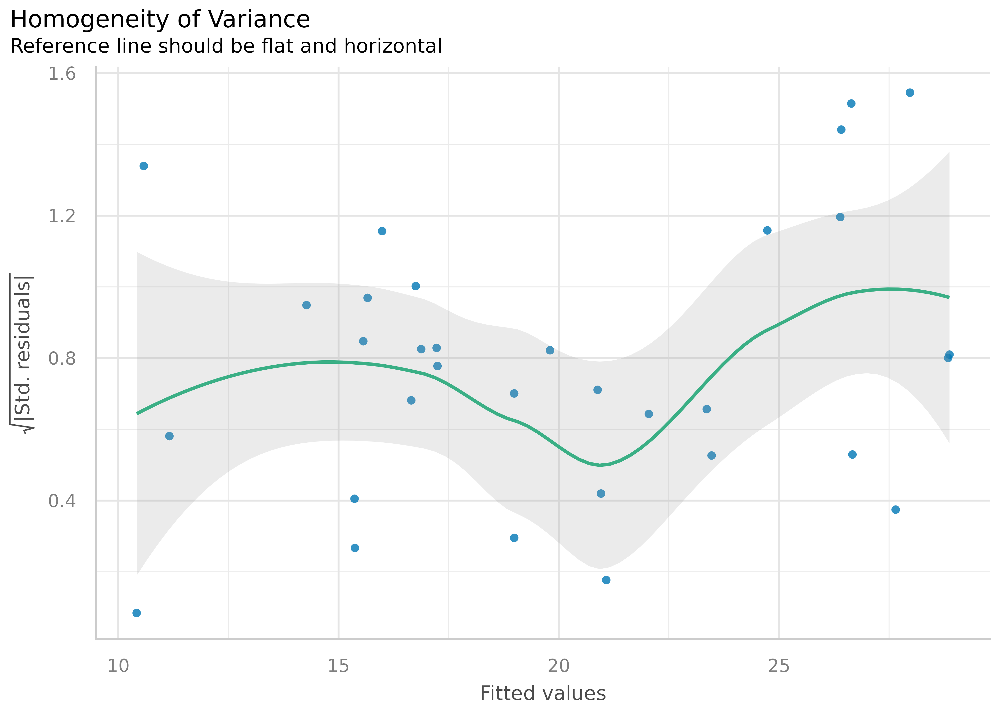
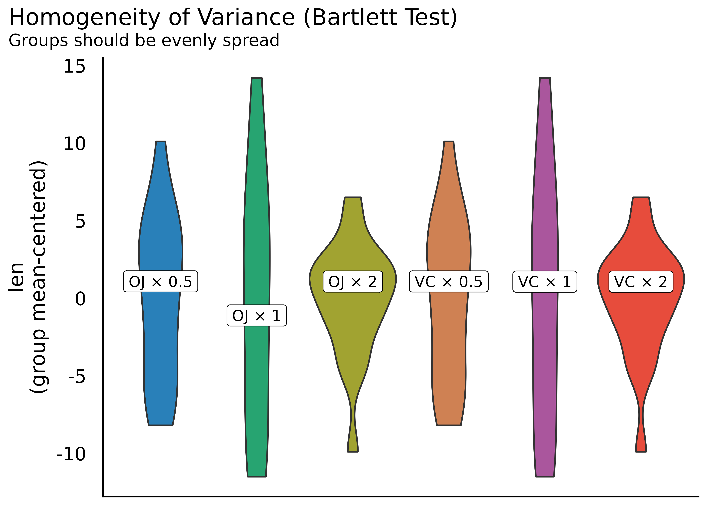
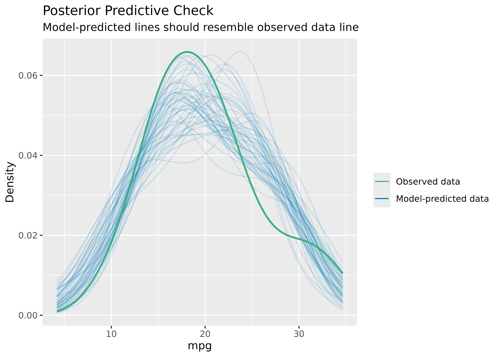
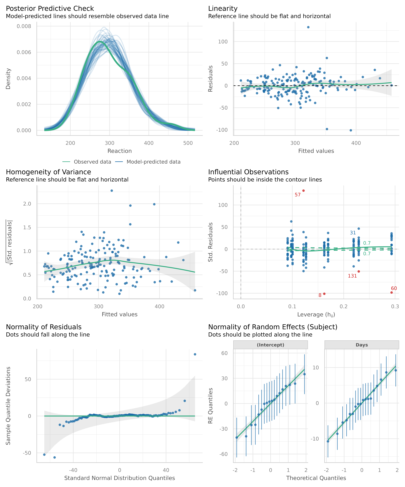
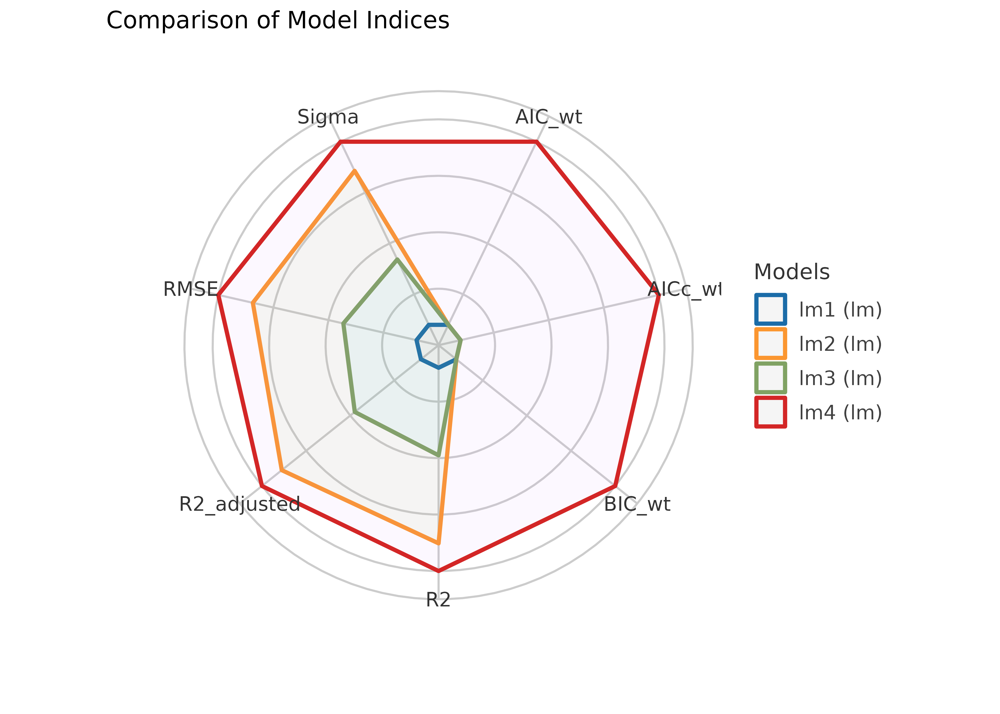

This vignette can be referred to by citing the package:
citation("see")
#>
#> To cite package 'see' in publications use:
#>
#> Lüdecke et al., (2021). see: An R Package for Visualizing Statistical
#> Models. Journal of Open Source Software, 6(64), 3393.
#> https://doi.org/10.21105/joss.03393
#>
#> A BibTeX entry for LaTeX users is
#>
#> @Article{,
#> title = {{see}: An {R} Package for Visualizing Statistical Models},
#> author = {Daniel Lüdecke and Indrajeet Patil and Mattan S. Ben-Shachar and Brenton M. Wiernik and Philip Waggoner and Dominique Makowski},
#> journal = {Journal of Open Source Software},
#> year = {2021},
#> volume = {6},
#> number = {64},
#> pages = {3393},
#> doi = {10.21105/joss.03393},
#> }Introduction
A crucial aspect when building regression models is to evaluate the quality of modelfit. It is important to investigate how well models fit to the data and which fit indices to report. Functions to create diagnostic plots or to compute fit measures do exist, however, mostly spread over different packages. There is no unique and consistent approach to assess the model quality for different kind of models.
The primary goal of the performance package in easystats ecosystem is to fill this gap and to provide utilities for computing indices of model quality and goodness of fit. These include measures like r-squared (R2), root mean squared error (RMSE) or intraclass correlation coefficient (ICC) , but also functions to check (mixed) models for overdispersion, zero-inflation, convergence or singularity.
For more, see: https://easystats.github.io/performance/
Checking Model Assumptions
Let’s load the needed libraries first:
Binned Residuals
(related function documentation)
Example where model is not a good fit.
model <- glm(vs ~ wt + mpg, data = mtcars, family = "binomial")
result <- binned_residuals(model)
result
#> Warning: Probably bad model fit. Only about 50% of the residuals are inside the error bounds.
plot(result)
Example where model is a good fit.
model <- glm(am ~ mpg + vs + cyl, data = mtcars, family = "binomial")
result <- binned_residuals(model)
result
#> Ok: About 100% of the residuals are inside the error bounds.
plot(result)
Check for Multicollinearity - Variance Inflation Factor
(related function documentation)
m <- lm(mpg ~ wt + cyl + gear + disp, data = mtcars)
result <- check_collinearity(m)
result
#> # Check for Multicollinearity
#>
#> Low Correlation
#>
#> Term VIF VIF 95% CI Increased SE Tolerance Tolerance 95% CI
#> cyl 5.41 [3.42, 9.04] 2.33 0.18 [0.11, 0.29]
#>
#> Moderate Correlation
#>
#> Term VIF VIF 95% CI Increased SE Tolerance Tolerance 95% CI
#> gear 1.53 [1.19, 2.51] 1.24 0.65 [0.40, 0.84]
#> wt 5.05 [3.21, 8.41] 2.25 0.20 [0.12, 0.31]
#> disp 9.97 [6.08, 16.85] 3.16 0.10 [0.06, 0.16]
plot(result)
library(glmmTMB)
data(Salamanders)
# create highly correlated pseudo-variable
set.seed(1)
Salamanders$cover2 <-
Salamanders$cover * runif(n = nrow(Salamanders), min = .7, max = 1.5)
# fit mixed model with zero-inflation
model <- glmmTMB(
count ~ spp + mined + cover + cover2 + (1 | site),
ziformula = ~ spp + mined,
family = truncated_poisson,
data = Salamanders
)
result <- check_collinearity(model)
result
#> # Check for Multicollinearity
#>
#> * conditional component:
#>
#> Low Correlation
#>
#> Term VIF VIF 95% CI Increased SE Tolerance Tolerance 95% CI
#> spp 1.07 [1.02, 1.24] 1.04 0.93 [0.81, 0.98]
#> mined 1.17 [1.10, 1.31] 1.08 0.85 [0.76, 0.91]
#>
#> High Correlation
#>
#> Term VIF VIF 95% CI Increased SE Tolerance Tolerance 95% CI
#> cover 13.45 [11.66, 15.55] 3.67 0.07 [0.06, 0.09]
#> cover2 13.28 [11.51, 15.35] 3.64 0.08 [0.07, 0.09]
#>
#> * zero inflated component:
#>
#> Low Correlation
#>
#> Term VIF VIF 95% CI Increased SE Tolerance Tolerance 95% CI
#> spp 1.08 [1.03, 1.24] 1.04 0.93 [0.81, 0.97]
#> mined 1.08 [1.03, 1.24] 1.04 0.93 [0.81, 0.97]
plot(result)
Check for Outliers
(related function documentation)
# select only mpg and disp (continuous)
mt1 <- mtcars[, c(1, 3, 4)]
# create some fake outliers and attach outliers to main df
mt2 <- rbind(mt1, data.frame(mpg = c(37, 40), disp = c(300, 400), hp = c(110, 120)))
# fit model with outliers
model <- lm(disp ~ mpg + hp, data = mt2)
result <- check_outliers(model)
result
#> Warning: 2 outliers detected (cases 31, 34).There are two visualization options


Check for Normal Distributed Residuals
(related function documentation)
model <- lm(mpg ~ wt + cyl + gear + disp, data = mtcars)
result <- check_normality(model)

Check for Normal Distributed Random Effects
(related function documentation)
model <- lmer(Reaction ~ Days + (Days | Subject), sleepstudy)
result <- check_normality(model, effects = "random")
plot(result)
#> [[1]]
Check for Heteroscedasticity
(related function documentation)
model <- lm(mpg ~ wt + cyl + gear + disp, data = mtcars)
result <- check_heteroscedasticity(model)
plot(result)
Check for Homogeneity
(related function documentation)
model <- lm(len ~ supp + dose, data = ToothGrowth)
result <- check_homogeneity(model)
plot(result)
Posterior Predictive Checks
(related function documentation)
model <- lm(mpg ~ wt + cyl + gear + disp, data = mtcars)
check_posterior_predictions(model)
To check if the model properly captures the variation in the data,
use check_range = TRUE:
model <- lm(mpg ~ wt + cyl + gear + disp, data = mtcars)
check_posterior_predictions(model, check_range = TRUE)
Overall Model Check
(related function documentation)
The composition of plots when checking model assumptions depends on the type of the input model. E.g., for logistic regression models, a binned residuals plot is used, while for linear models a plot of homegeneity of variance is shown instead. Models from count data include plots to inspect overdispersion.
Checks for generalized linear models
Logistic regression model
model <- glm(am ~ mpg + vs + cyl, data = mtcars, family = "binomial")
check_model(model)
Modelling count data
model <- glm(
count ~ spp + mined + cover,
family = poisson(),
data = Salamanders
)
check_model(model)
Checks for linear (mixed) models
model <- lmer(Reaction ~ Days + (Days | Subject), sleepstudy)
check_model(model)
check_model(model, panel = FALSE)Note that not all checks supported in performance will
be reported in this unified visual check. For example,
for linear models, one needs to check the assumption that errors are not
autocorrelated, but this check will not be shown in the visual
check.
check_autocorrelation(lm(formula = wt ~ mpg, data = mtcars))
#> Warning: Autocorrelated residuals detected (p = 0.004).Compare Model Performances
(related function documentation)
compare_performance() computes indices of model
performance for different models at once and hence allows comparison of
indices across models. The plot()-method creates a
“spiderweb” plot, where the different indices are normalized and larger
values indicate better model performance. Hence, points closer to the
center indicate worse fit indices.
data(iris)
lm1 <- lm(Sepal.Length ~ Species, data = iris)
lm2 <- lm(Sepal.Length ~ Species + Petal.Length, data = iris)
lm3 <- lm(Sepal.Length ~ Species * Sepal.Width, data = iris)
lm4 <- lm(Sepal.Length ~ Species * Sepal.Width + Petal.Length + Petal.Width, data = iris)
result <- compare_performance(lm1, lm2, lm3, lm4)
result
#> # Comparison of Model Performance Indices
#>
#> Name | Model | AIC | AIC weights | BIC | BIC weights | R2 | R2 (adj.) | RMSE | Sigma
#> ------------------------------------------------------------------------------------------------
#> lm1 | lm | 231.452 | 7.10e-34 | 243.494 | 1.32e-30 | 0.619 | 0.614 | 0.510 | 0.515
#> lm2 | lm | 106.233 | 1.10e-06 | 121.286 | 4.54e-04 | 0.837 | 0.833 | 0.333 | 0.338
#> lm3 | lm | 187.092 | 3.05e-24 | 208.167 | 6.18e-23 | 0.727 | 0.718 | 0.431 | 0.440
#> lm4 | lm | 78.797 | 1.000 | 105.892 | 1.000 | 0.871 | 0.865 | 0.296 | 0.305
plot(result)
Model and Vector Properties
(related function documentation)
model <- lmer(Reaction ~ Days + (Days | Subject), sleepstudy)
result <- check_distribution(model)
result
#> # Distribution of Model Family
#>
#> Predicted Distribution of Residuals
#>
#> Distribution Probability
#> normal 91%
#> exponential 6%
#> lognormal 3%
#>
#> Predicted Distribution of Response
#>
#> Distribution Probability
#> lognormal 81%
#> gamma 12%
#> chi 3%
plot(result)
vec <- bayestestR::distribution_poisson(n = 500, lambda = 2.5)
result <- check_distribution(vec)
result
#> # Predicted Distribution of Vector
#>
#> Distribution Probability
#> poisson 69%
#> negative binomial 28%
#> binomial 3%
plot(result)
ROC curves
(related function documentation)
if (packageVersion("performance") > "0.7.0") {
data(iris)
set.seed(123)
iris$y <- rbinom(nrow(iris), size = 1, .3)
folds <- sample(nrow(iris), size = nrow(iris) / 8, replace = FALSE)
test_data <- iris[folds, ]
train_data <- iris[-folds, ]
model <- glm(y ~ Sepal.Length + Sepal.Width, data = train_data, family = "binomial")
result <- performance_roc(model, new_data = test_data)
result
plot(result)
}You can also compare ROC curves for different models.
if (packageVersion("performance") > "0.7.0") {
set.seed(123)
library(bayestestR)
# creating models
m1 <- glm(vs ~ wt + mpg, data = mtcars, family = "binomial")
m2 <- glm(vs ~ wt + am + mpg, data = mtcars, family = "binomial")
# comparing their performances using the AUC curve
plot(performance_roc(m1, m2))
}